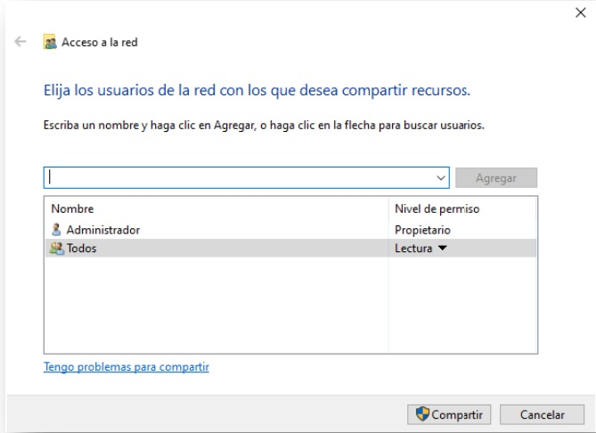
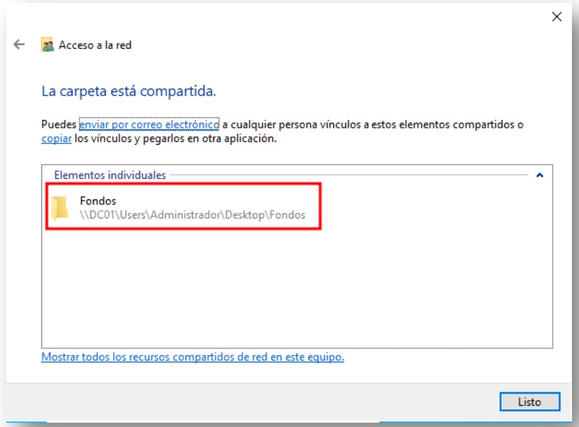
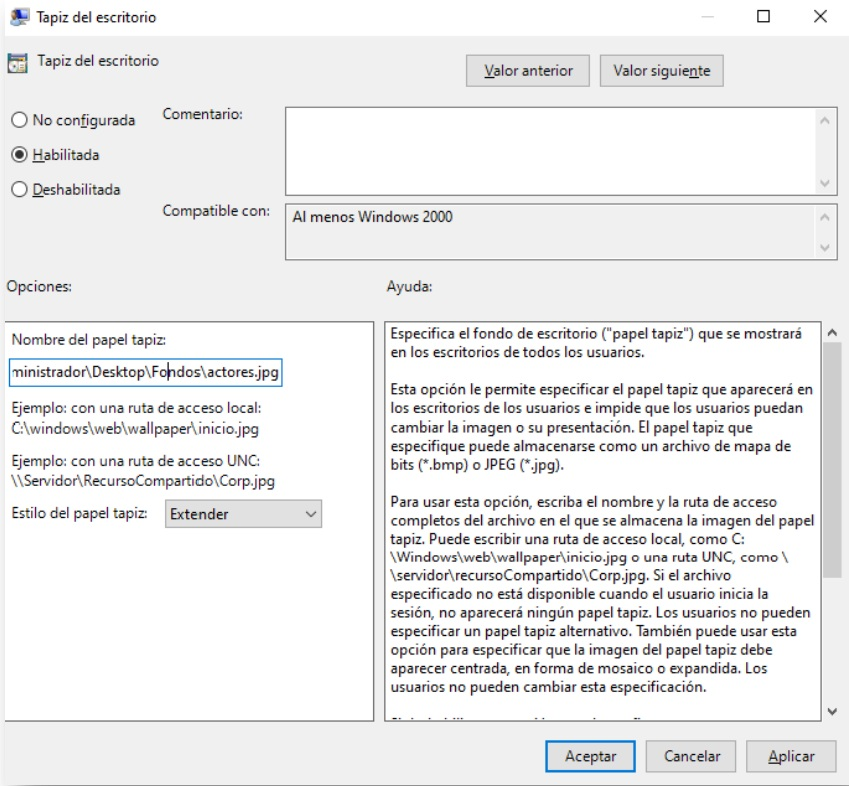
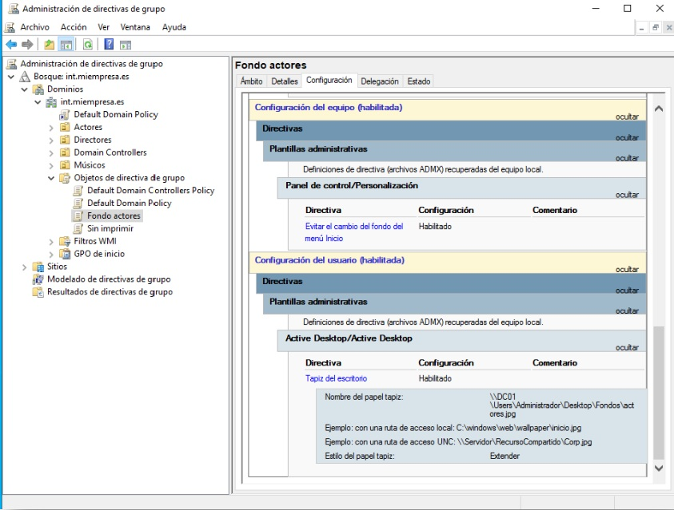

Crear una GPO
Configuración
En el contexto de un dominio bajo Active Directory de Microsoft, una
GPO es una política, regla o configuración que permite administrar
específicamente una Unidad Organizativa (OU). En esencia, una GPO
aplicada a una OU se parece mucho a un permiso específico para un
grupo aplicado a un fichero.
Eso es a muy grandes rasgos, hay diferencias sustanciales. Para
empezar una GPO no se aplica a ningún fichero y sí a usuarios o
equipos.
Además, los permisos estaban limitados a dejar leer, escribir y
ejecutar, pero las GPOs tienen más que ver con configuraciones de
seguridad, restricciones de funciones, mapeo de unidades, despliegue
de aplicaciones en equipos y ejecución de scripts al iniciar sesión.
Es cierto que las GPOs se pueden aplicar a todo el dominio entero
afectando a todos los usuarios y equipos, pero su aplicación ideal es
sobre Unidades Organizativas porque solo afectarán a los objetos
contenidos en ellas.
La correcta estructuración de la organización en OUs es un asunto
complejo que requiere de mucho conocimiento y más experiencia. El modo
de funcionamiento es simple, en el momento de la autenticación del
usuario, Active Directory determina las GPOs que se deben aplicar
según la correspondiente OU y las aplica.
Es por ello por lo que muchas veces los cambios requieren un cierre de
sesión o reiniciar el equipo. Si queremos que una sesión abierta
recargue de nuevo las GPOs y no queremos/podemos reiniciar tendremos
que ejecutar el siguiente comando (aunque no es 100% funcional en
todos los casos):
gpupdate /force
Una GPO se edita para habilitar o deshabilitar una o varias políticas.
Estas políticas se encuentran organizadas en un árbol que aparece a la
derecha.
En general encontraremos opciones similares en dos grandes grupos, las
relacionadas con el equipo y las relacionadas con el usuario. Por
poner un ejemplo, la ejecución de un script para que ejecute algo se
puede aplicar al arranque y apagado de un equipo o al abrir o cerrar
sesión de un usuario.
Desde el "Administrador del servidor" pincharemos en el menú
"Herramientas" y seleccionaremos "Administración de directivas de
grupo". Desde allí, dentro de la zona de trabajo de nuestro
dominio,encima de "Objetos de directiva de grupo" usaremos el botón
derecho del ratón para añadir una "Nueva directiva de grupo".
Le pondremos un nombre significativo, en mi caso "cambio de fondo".

"Compartir", nos aparecerá una ventana en la que tenemos que definir
qué usuarios tienen permisos de acceso. Escribiremos "todos" que es
un grupo por defecto en Windows que incluye a la totalidad de los
usuarios. Hago un paréntesis aquí para dejar constancia de que esta
es una configuración didáctica pero extremadamente insegura.
Finalmente veremos una ventana como la siguiente en la que
confirmamos que los administradores pueden escribir para modificar o
añadir fondos, y que el resto de los usuarios solo pueden leer. Nos
vale.

Pincharemos en "Compartir" y aparecerá una nueva ventana resumen donde
podemos ver la dirección de red en la que estarán accesibles los
fondos de pantalla "\\DC01\Users\Administrador\Desktop\Fondos"

Ahora que ya tenemos los fondos de pantalla en una carpeta
compartida del servidor es el momento de configurar la GPO.
Desde el "Administrador de servidor" abrimos "Administrador de
directivas de grupo" desde el menú de "Herramientas".
Allí crearemos la GPO "Fondo actores" en el contenedor de "Objetos
de directiva de grupo" y la editaremos cambiando lo siguiente:
-
Configuración de usuario / Directivas / Plantillas administrativas
/ Active Desktop / Active Desktop / Tapiz del escritorio:
Habilitada
-
Configuración de usuario / Directivas / Plantillas administrativas
/ Panel de control / Personalización / Impedir cambiar el fondo de
pantalla: Habilitar
-
Tendremos que pasar la ruta del archivo y el estilo que queremos
aplicar.

El resultado debería ser:
Y por último vincular la GPO con la OU de actores. El resultado en
el siguiente inicio de sesión con alguno de los usuarios de la OU
"Actores" será como en la siguiente captura:
